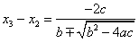
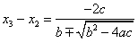

4.7.2. X3’ ün Bulunması
(4.8) polinomunda x yerine x3 alarak kökünü x3-x2 biçiminde ifade edebiliriz. Bu durumda ikinci derece denkleminin kök formülü olan
 kullanılacaktır. Ancak birbirine çok yakın değerlerin birbirinden çıkarılması esnasında yuvarlatma hataları ortaya çıkabilir. Bunu önlemek için kök formülü olarak
kullanılacaktır. Ancak birbirine çok yakın değerlerin birbirinden çıkarılması esnasında yuvarlatma hataları ortaya çıkabilir. Bunu önlemek için kök formülü olarak  tercih edilir. O halde,  yazılabilir. Buradan aşağıdaki sonuç elde edilir.
tercih edilir. O halde,  yazılabilir. Buradan aşağıdaki sonuç elde edilir.